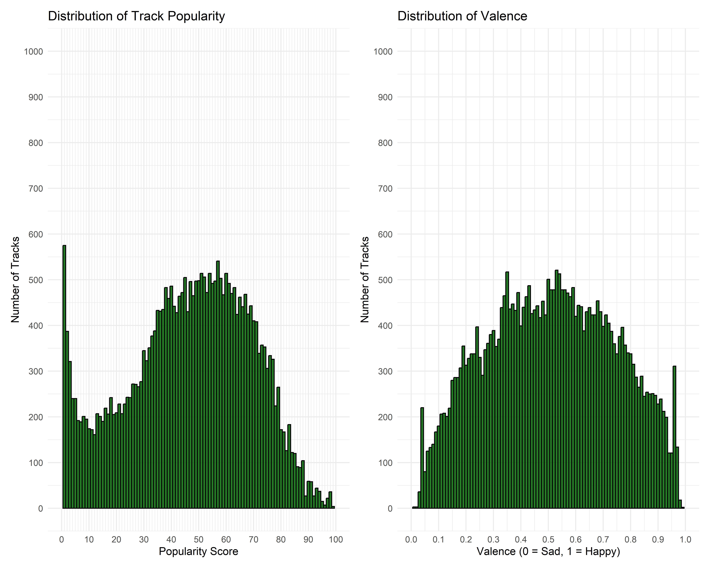
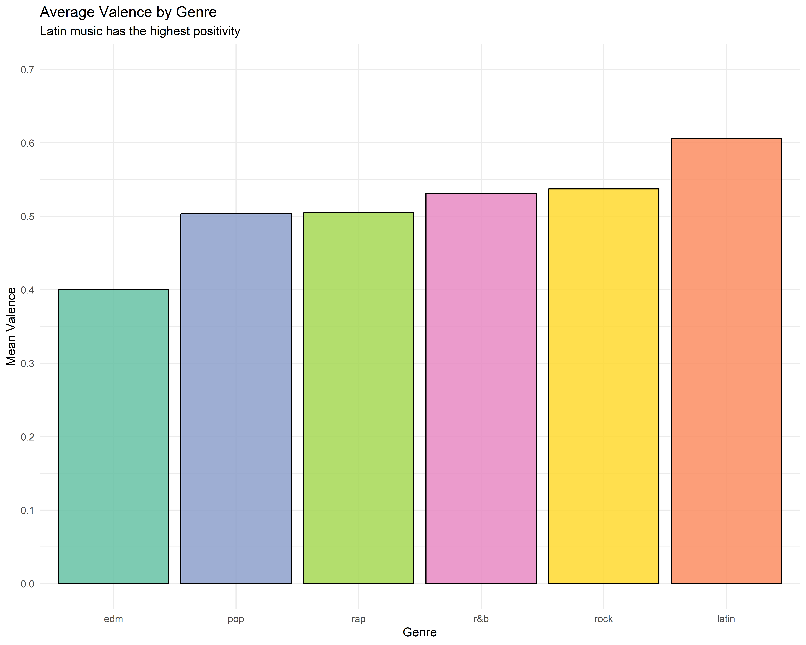
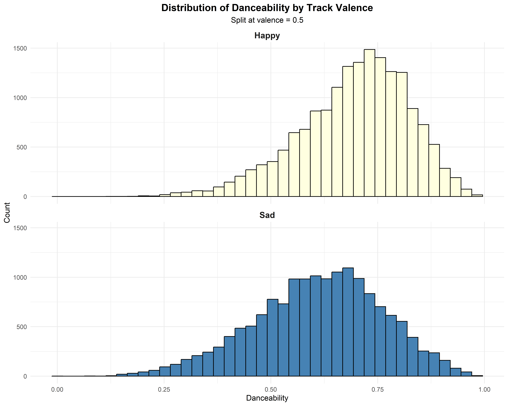

Are happy songs more popular? A case study with Spotify data
Introduction
Why do people love music? A major debate in the social sciences is whether musical taste results from universal biological and cognitive features of our species or from the specific historical and cultural conventions of genres and scenes. On the universalist side, researchers have documented cross-cultural regularities in music, suggesting general psychological mechanisms make certain acoustic properties broadly appealing (Fritz et al., 2009). On the contextualist side, sociologists of culture have argued that a song’s success depends on how its features relate to the norms and conventions of its genre, so what “sounds good” is genre-relative rather than universal (Askin & Mauskapf, 2017).
We focus on valence (a song’s musical positivity) because it is a feature about which the two traditions make interestingly divergent predictions.
For the universalist side, musical valence matters because positive-sounding acoustic cues (major mode, consonant harmonies, brighter timbres, moderate-to-fast tempi) engage general affective and reward mechanisms that operate similarly across listeners, so higher-valence songs should be more broadly appealing regardless of the genre they appear in.
For the contextualists, valence matters only through the lens of genre conventions: each genre has developed, over its history, its own norms about what an emotionally appropriate song sounds like: dance-oriented genres reward high positivity because their function is collective celebration, while introspective genres like R&B or certain rock traditions value lower valence because melancholy and vulnerability are part of what audiences come to those genres for. On this view, the “right” level of valence is genre-relative, and the same acoustic positivity that helps a pop song succeed can make an R&B track feel generic or inauthentic.
Research question (conceptual): Is the appeal of musical positivity a general psychological phenomenon, or is it shaped by genre-specific conventions?
Research question (operationalization): Does the association between valence and track popularity in the Spotify dataset hold uniformly across genres, or does it vary substantially?
H1 (universalist): Valence has a positive association with track popularity across genres
H2 (contextualist): The valence–popularity relationship varies significantly across genres
Expected public for this sheet of paper: I am writing this paper for an audience of social scientists interersted in the question of the universality of musical taste—researchers like Samuel Fehr and Manvir Singh. I intend to make a contribution in this field, by showing that musical features are not universally appealing, through the example of valence.
Descriptive statistics (1): Description of the main variables of interest
Note however that valence is not equally distributed across genres. As one could expect, some genres (e.g. latin) are significantly more positive than others.

Statistical inference
We examined the relationship between track popularity and valence (musical positivity) across the entire dataset and specifically within EDM and R&B genres. Overall, there was a weak positive correlation between valence and track popularity (r = 0.033, p < .001). However, this relationship varied substantially by genre.For EDM tracks, we found a weak positive correlation (r = 0.126, p < .001), suggesting that more positive-sounding EDM songs tend to be slightly more popular.In contrast, R&B showed a weak negative correlation (r = -0.135, p < .001), indicating that less positive-sounding R&B tracks are associated with greater popularity.These findings suggest that the relationship between musical positivity and popularity is genre-dependent, with opposite patterns emerging in EDM versus R&B music.
Robustness check: do the results replicate if we control for danceability?
It is possible that the relationship between valence and popularity is driven by a confound variable: danceability. Perhaps happier song also tend to be more danceable song, and it is the danceability, and not the happiness, that makes the track popular. Indeed, as the table below shows, happier songs are more danceable than sadder ones.

I run a multiple linear regression with valence as the predictor variable and danceability as an additional control variable. We find that the positive effect of valence on track popularity persists even when accounting for danceability (β = 1.42, p < .001). Danceability itself shows a stronger positive association with popularity (β = 10.39, p < .001), suggesting that tracks with higher danceability tend to be more popular overall. However, the model explains only a small portion of variance in track popularity (R² = 0.004), indicating that valence and danceability alone are insufficient to predict what makes a track popular.
Discussion
This analysis reveals that valence has a small but significant positive effect on track popularity: happier-sounding tracks tend to be slightly more popular. This relationship holds even when controlling for danceability. Importantly, we also find that this relationship is heavily genre-dependent: happier songs are more popular for edm tracks but less popular for R&B tracks. Taken together, these results provide only weak support for the universalist prediction (H1) and stronger support for the contextualist prediction (H2): the appeal of musical positivity does not operate uniformly, but tracks the emotional conventions of specific genres.